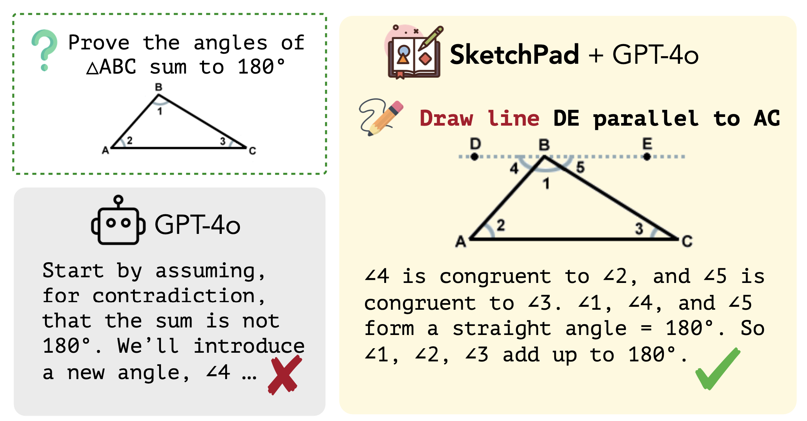
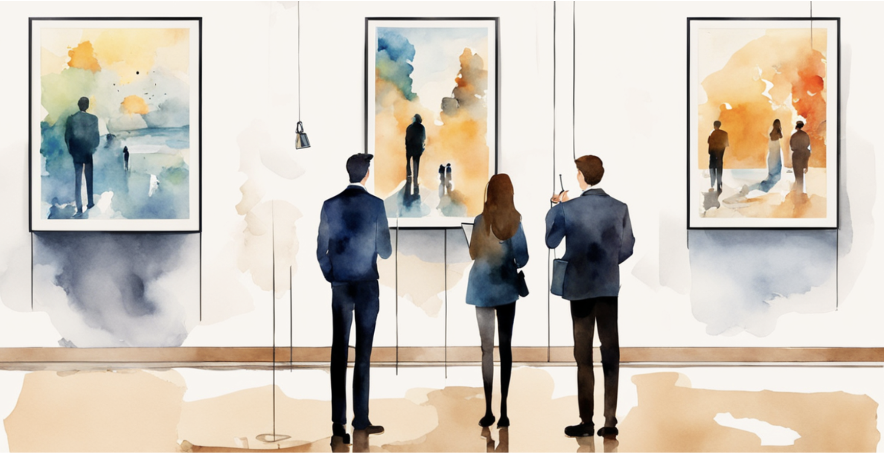
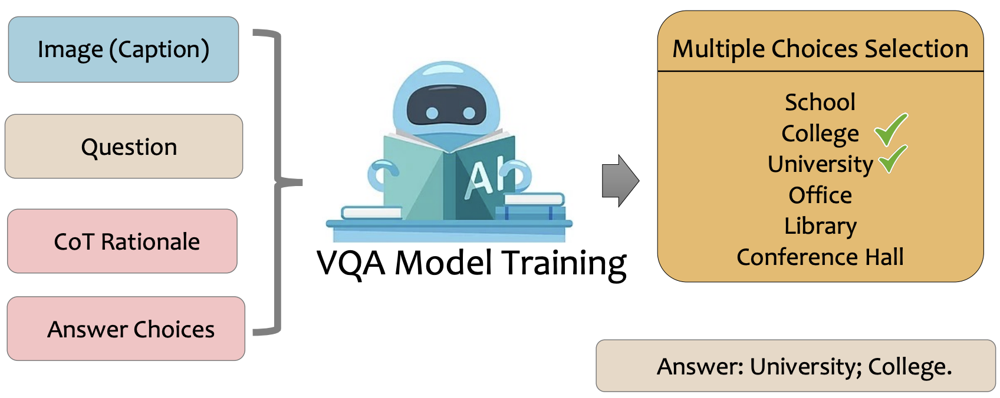
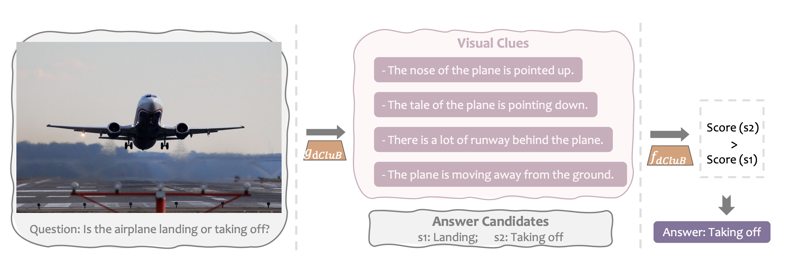
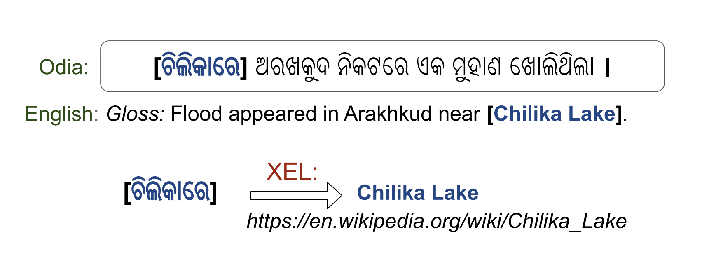
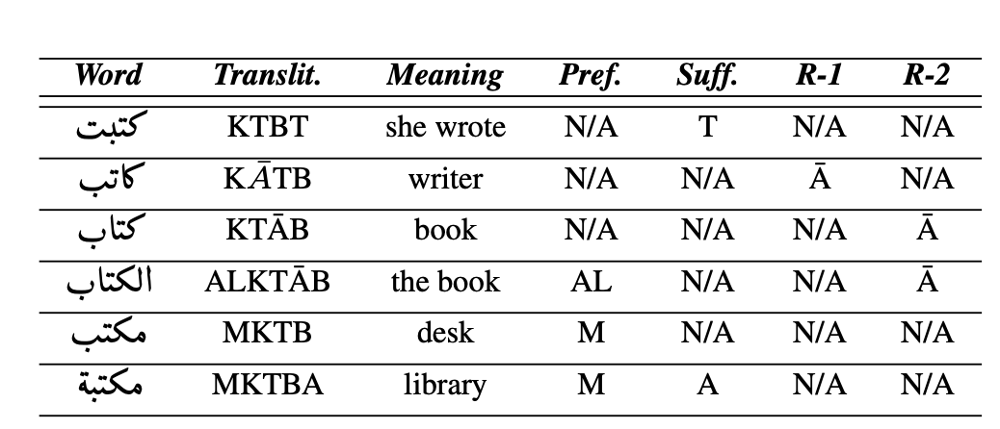

📑 Research Projects
-

ReFocus: Visual Editing as a Chain of Thought for Structured Image Understanding
Xingyu Fu, Minqian Liu, Zhengyuan Yang, John Corring, Yijuan Lu, Jianwei Yang, Dan Roth, Dinei Florencio, Cha Zhang
ICML 2025

Science-T2I: Addressing Scientific Illusions in Image Synthesis
Jialuo Li, Wenhao Chai, Xingyu Fu, Haiyang Xu, Saining Xie
CVPR 2025

MUIRBENCH: A Comprehensive Benchmark for Robust Multi-image Understanding
Fei Wang*, Xingyu Fu*, James Y. Huang, Zekun Li, Qin Liu, Xiaogeng Liu, Mingyu Derek Ma, Nan Xu, Wenxuan Zhou, Kai Zhang, Tianyi Lorena Yan, Wenjie Jacky Mo, Hsiang-Hui Liu, Pan Lu, Chunyuan Li, Chaowei Xiao, Kai-Wei Chang, Dan Roth, Sheng Zhang, Hoifung Poon, Muhao Chen
ICLR 2025
Visual Sketchpad: Sketching as a Visual Chain of Thought for Multimodal Language Models
Yushi Hu*, Weijia Shi*, Xingyu Fu, Dan Roth, Mari Ostendorf, Luke Zettlemoyer, Noah A Smith, Ranjay Krishna
NeurIPS 2024

Commonsense-T2I Challenge: Can Text-to-Image Generation Models Understand Commonsense?
Xingyu Fu, Muyu He, Yujie Lu, William Yang Wang, Dan Roth
COLM 2024

BLINK: Multimodal Large Language Models Can See but Not Perceive
Xingyu Fu*, Yushi Hu*, Bangzheng Li, Yu Feng, Haoyu Wang, Xudong Lin, Dan Roth, Noah A. Smith, Wei-Chiu Ma†, Ranjay Krishna†
ECCV 2024, Spotlight of cVinW@CVPR 2024, 36K total downloads.
[paper] [website] [code] [dataset] [eval] [twitter] [
 Paper of the day]
Paper of the day]

Deceptive Semantic Shortcuts on Reasoning Chains: How Far Can Models Go without Hallucination?
Bangzheng Li, Ben Zhou, Fei Wang, Xingyu Fu, Dan Roth, Muhao Chen
NAACL. 2024.
ImagenHub: Standardizing the evaluation of conditional image generation models
Max Ku, Tianle Li, Kai Zhang, Yujie Lu, Xingyu Fu, Wenwen Zhuang, Wenhu Chen
ICLR. 2024.
Generate then Select: Open-ended Visual Question Answering Guided by World Knowledge
Xingyu Fu, Sheng Zhang, Gukyeong Kwon, Pramuditha Perera, Henghui Zhu, Yuhao Zhang, Alexander Hanbo Li, William Yang Wang, Zhiguo Wang, Vittorio Castelli, Patrick Ng, Dan Roth, Bing Xiang
ACL findings. 2023.
Dynamic Clue Bottlenecks: Towards Interpretable-by-Design Visual Question Answering
Xingyu Fu, Ben Zhou, Sihao Chen, Mark Yatskar, Dan Roth
Arxiv. 2023.

There's a Time and Place for Reasoning Beyond the Image
Xingyu Fu, Ben Zhou, Ishaan Chandratreya, Carl Vondrick, Dan Roth
ACL (Oral). 2022.
Design Challenges in Low-resource Cross-lingual Entity Linking
Xingyu Fu*, Weijia Shi*, Xiaodong Yu, Zian Zhao, Dan Roth
EMNLP. 2020.
Constrained sequence-to-sequence semitic root extraction for enriching word embeddings
Ahmed El-Kishky*, Xingyu Fu*, Aseel Addawood, Nahil Sobh, Clare Voss, Jiawei Han
WANLP @ ACL. 2019.
🎤 Invited Talks
- [2024/09] : UPenn Clunch. Title: Better Evaluations for Generative Multimodal Models.
- [2024/06] : Microsoft Azure AI, AI reading group. Title: BLINK: Multimodal Large Language Models Can See but Not Perceive.
- [2023/07] : Amazon AWS Responsible AI Group, AI reading group. Title: Generate then Select: Open-ended Visual Question Answering Guided by World Knowledge.
💼 Work Experience
- [Summer 2024], Research Intern @ Microsoft, Seattle WA
- [Summer 2022], Research Intern @ AWS AI Labs, New York City NY
- [Summer 2019], Research Intern @ Cogcomp from UPenn, Philadelphia PA
- [Summer 2018], Research Assistant @ DMG from UIUC, Champaign IL